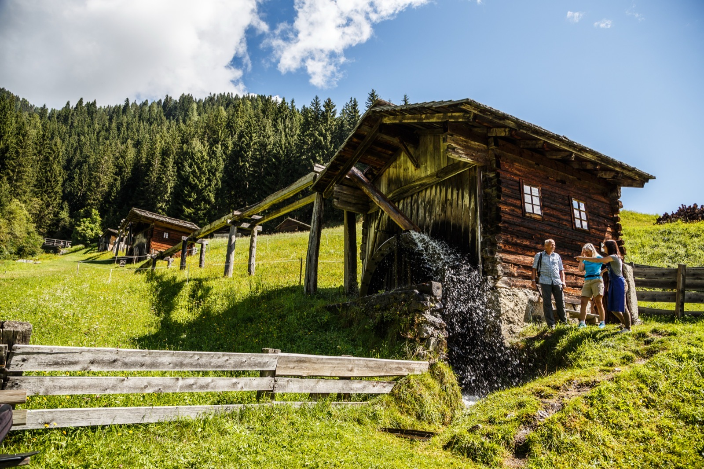
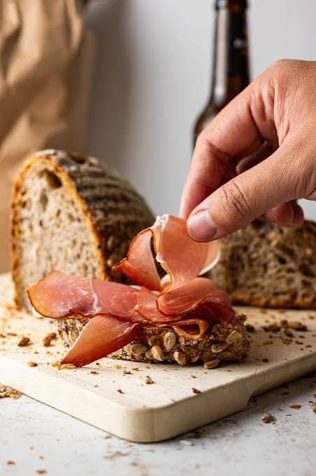
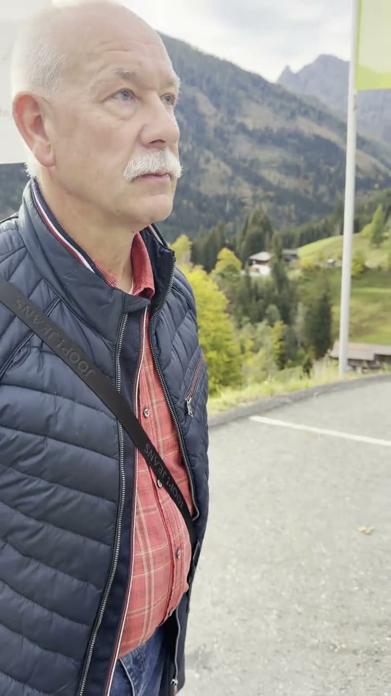

Kurz gesagt
Die erste Lesachtal-Woche hat im Oktober 2026 stattgefunden. Die nächste steht fest: 10. bis 14. Oktober 2027 — wieder im Alpenhotel Wanderniki, mit Vollpension und in einer Gruppe von maximal 12 Personen. Begleitet wird die Woche von mir gemeinsam mit Iris Kurzweil, Bergwanderführerin aus Kärnten. Offen ist nur noch der Preis. Wer informiert werden möchte, kann sich jetzt unverbindlich melden.
Raus aus dem Alltag. Rein in eine Landschaft, die Ruhe, Ursprünglichkeit, Bergnatur und echte regionale Genusskultur verbindet.
Das Lesachtal in Kärnten war jahrhundertelang eines der letzten Selbstversorgertäler Europas — und ist bis heute ursprünglich geblieben. Basecamp war 2026 das Alpenhotel Wanderniki in Obergail. Von dort ging es zu geführten Wanderungen, besonderen Naturmomenten und ausgewählten regionalen Stationen rund um Brot, Mühlen, Kräuter, Bienen, Alm, Wasser und Kulinarik.
Es geht nicht um höher, schneller, weiter. Es geht um bewusstes Wandern, gute Gespräche, Naturerleben, regionale Küche und das Gefühl, für ein paar Tage wirklich anzukommen.
Eine Woche, die bleibt
Diese Woche lebt von echten Begegnungen. Wir wandern nicht nur durch das Lesachtal, wir erleben es durch seine Menschen, sein Handwerk, seine Küche, seine Musik und seine besondere Ruhe.
An den einzelnen Stationen gibt es persönliche Einblicke direkt von den Menschen vor Ort. Die Gastgeber, Produzenten und Betreiber zeigen ihr Handwerk, erzählen von ihrer Arbeit und lassen die regionale Kultur unmittelbar erleben.
Ob Imkerlehrpfad, Mühlenführung, Kräuter- und Wurzellehrgang, Bauernladen, Speckverkostung oder Brotbacken: überall gibt es eine kleine Vorführung, persönliche Geschichten und etwas, das man mitnehmen kann — manchmal als Kostprobe, manchmal als Wissen, manchmal als Erinnerung an einen besonderen Moment.
So entsteht keine klassische Wanderwoche, sondern eine genussvolle Reise durch Natur, Handwerk und gelebte Lesachtaler Tradition.
Was diese Woche ausmacht
- Kleine, persönlich geführte Gruppe
- Begleitung durch André Arndt und Iris Kurzweil
- Geführte Wanderungen zu besonderen Naturplätzen im Lesachtal
- Regionale Stationen mit persönlichen Vorführungen durch Menschen vor Ort
- Kleine Genuss- oder Erinnerungsmomente zum Mitnehmen
- Gemeinsames Brotbacken und Vorträge zu Bienen, Kräutern und Mühlen
- Vollpension mit Mehrgänge-Menü am Abend
- Gesellige Abende mit regionaler Musik der Gastgeberfamilie
- Saunalandschaft zur Erholung nach den Touren
- Eine Woche, die Natur, Genuss, Kultur und Gemeinschaft verbindet


Eindrücke aus 2026
Alle Bilder sind eigene Aufnahmen aus der Lesachtal-Woche im Oktober 2026. Zum Vergrößern anklicken.
19 Aufnahmen aus der Woche vom 11. bis 15. Oktober 2026.
Was ein Gast dazu sagt
Aufgenommen am Ende der Woche 2026, veröffentlicht mit Einverständnis.

1:53Ein Gast über die Woche
Basecamp 2026: Alpenhotel Wanderniki
Ausgangspunkt war 2026 das Alpenhotel Wanderniki in Obergail — ein Ort, an dem Gastfreundschaft, regionale Küche und Erholung zusammenkommen.
Nach den gemeinsamen Wander- und Erlebnistagen gab es am Abend ein Mehrgänge-Menü im Hotel. Die Küche ist regional geprägt, liebevoll zubereitet und passte gut zum Charakter dieser Woche: bewusst genießen, gut essen und den Tag gemeinsam ausklingen lassen.
An manchen Abenden wurde es besonders gesellig, mit regionaler Musik der Gastgeberfamilie — 2027 ist das wieder fest eingeplant. Genau diese Mischung aus Kulinarik, Begegnung und echter Gastfreundschaft macht die Tage im Lesachtal besonders.
Wer nach der Tour zur Ruhe kommen möchte, findet in der Saunalandschaft des Hotels den passenden Rahmen — sie gehört mit dazu. Im Oktober 2027 ist das Alpenhotel Wanderniki wieder unser Basecamp.
So war das Programm 2026
Die folgenden Tage zeigen, wie die Woche 2026 abgelaufen ist. Sie sind als Eindruck und Inspiration gedacht — für 2027 sind Routen, Stationen und Zeiten noch nicht festgelegt.
Tag 1 · Sonntag, 11.10.2026
Ankommen in Obergail
Individuelle Anreise im Alpenhotel Wanderniki. Zum Einstieg wandern wir Richtung Obergailer See und Endeberghütte. Gegen 14:00 Uhr besuchen wir den Imkerlehrpfad. Dort erhalten wir erste Einblicke in die Natur- und Lebenswelt des Lesachtals und erfahren mehr über Bienen, Landschaft und regionale Zusammenhänge.
Erlebnis des Tages: Ankommen, Natur spüren, erste gemeinsame Schritte gehen und das Lesachtal bewusst wahrnehmen.
Tag 2 · Montag, 12.10.2026
Samalm, Mühlen & Kultur
Heute führt uns eine geführte Wanderung zur Samalm. Auf dem Weg erleben wir Alm, Aussicht und die besondere Ruhe dieser Landschaft. Am Nachmittag, gegen 14:00 Uhr, erwartet uns eine Mühlenführung und Kirchenführung. Dabei tauchen wir ein in Geschichte, Handwerk, Kultur und regionale Identität des Lesachtals.
Erlebnis des Tages: Almwandern, Mühlen, Kirche, Geschichte und lebendige Kultur.
Tag 3 · Dienstag, 13.10.2026
Gamskofel & Speckverkostung
Der Gamskofel steht im Mittelpunkt dieses Tages. Die geführte Bergtour schenkt uns Weitblick, Bewegung in klarer Bergluft und ein intensives Naturerlebnis. Im Anschluss genießen wir eine regionale Speckverkostung, je nach Wetter und Organisation beim Alpenhotel Wanderniki oder stimmungsvoll am See. Auch hier geht es nicht nur ums Probieren, sondern um das Kennenlernen regionaler Produkte und ihrer Entstehung.
Erlebnis des Tages: Gipfelerlebnis, Bergnatur, Bewegung und Lesachtaler Spezialitäten.
Tag 4 · Mittwoch, 14.10.2026
Schwalbenkofel, Bauernladen & Kräuterwissen
Unsere Tour führt uns auf den Schwalbenkofel. Auch dieser Tag verbindet Bewegung, Aussicht und Naturerleben. Um 14:00 Uhr erwartet uns im Bauernladen ein kleines regionales Essen: Speckknödel mit Suppe oder Krautsalat und Getränk. Anschließend folgt ein Kräuter- und Wurzellehrgang, bei dem wir mehr über Pflanzen, Wurzeln und traditionelles Naturwissen erfahren.
Erlebnis des Tages: Wandern, bäuerliche Küche, Kräuterwissen und Naturhandwerk.
Tag 5 · Donnerstag, 15.10.2026
Brotbacken & genussvoller Abschluss
Zum Abschluss widmen wir uns einer der wichtigsten Traditionen des Lesachtals: dem Brotbacken. Von 11:00 Uhr bis ca. 14:30 Uhr erleben wir, wie aus einfachen Zutaten, Zeit und Handwerk ein echtes Stück regionaler Identität entsteht. Danach lassen wir die gemeinsamen Tage bewusst ausklingen und treten individuell die Heimreise an.
Erlebnis des Tages: Brottradition, gemeinsames Tun und ein wertvoller Abschluss.
Wie anspruchsvoll ist das Wandern?
Die Lesachtal-Woche ist als genussvolles Bergwandern angelegt: schöne Touren, bewusste Pausen und ausreichend Zeit für Natur, Aussicht und regionale Erlebnisse.
Trotzdem gilt ganz klar: Eine solide Grundkondition und Trittsicherheit auf Bergwegen sind nötig. Einzelne Touren führen über 2.000 Meter und sind anspruchsvoll. Je nach Wetter, Wegverhältnissen und Tagesform können sie auch anspruchsvoller ausfallen als geplant. Ich verspreche niemandem, dass jede Tour für jeden passt — wir klären vorher gemeinsam und ehrlich, was für dich das Richtige ist.
Weil wir zu zweit unterwegs sind, können wir besser auf unterschiedliche Tempi eingehen. Ob eine Tour wirklich geteilt wird oder es einen Alternativweg gibt, entscheiden wir vor Ort nach Wetter, Wegverhältnissen und Gruppe — versprechen kann ich es vorher nicht.
Sicherheit, gute Stimmung und das gemeinsame Erlebnis stehen immer im Mittelpunkt.
Die Woche 2027 im Überblick
- Termin: 10. bis 14. Oktober 2027 — steht fest
- Dauer: 5 Tage / 4 Nächte
- Ort: Kärntner Lesachtal
- Unterkunft: Alpenhotel Wanderniki in Obergail
- Begleitung: André Arndt, staatlich geprüfter Bergwanderführer, gemeinsam mit Iris Kurzweil, Bergwanderführerin aus Kärnten
- Gruppengröße: maximal 12 Personen
- Verpflegung: Vollpension
- Preis: noch nicht festgelegt
- Charakter: geführt, persönlich, regional, genussvoll, naturverbunden
Termin, Ort, Unterkunft, Verpflegung, Gruppengröße und Leistungen stehen fest — offen ist nur noch der Preis. Dass wir zu zweit führen, hängt an der Gruppengröße; bei einer sehr kleinen Runde begleite ich die Woche allein.
Das ist 2027 enthalten
- Vier Nächte im Alpenhotel Wanderniki in Obergail
- Vollpension — mit Mehrgänge-Menü am Abend
- Geführte Wanderungen mit André Arndt und Iris Kurzweil
- Gemeinsames Brotbacken nach Lesachtaler Tradition
- Vorträge zu Bienen, Kräutern und Mühlen
- Alle Eintrittsgelder
- Gesellige Abende mit regionaler Musik
- Nutzung der Saunalandschaft im Hotel
Nicht enthalten sind die An- und Abreise, Getränke und persönliche Ausgaben. Der Preis für 2027 steht noch nicht fest und wird hier veröffentlicht, sobald er abgestimmt ist.
Für wen ist diese Woche geeignet?
Für Menschen, die gerne wandern und dabei mehr erleben möchten als reine Kilometer und Höhenmeter. Für alle, die Natur, regionale Küche, echtes Handwerk, gute Gespräche und eine kleine persönliche Gruppe schätzen. Für Menschen, die ein paar Tage raus möchten, mit Bewegung, Genuss, Ruhe und guter Begleitung.
Diese Woche passt besonders gut für Gäste, die das Lesachtal nicht nur anschauen, sondern wirklich erleben möchten.
Raus aus dem Alltag. Rein ins Lesachtal.
Interesse für Oktober 2027 anmeldenKontakt
Du möchtest im Oktober 2027 dabei sein oder informiert werden, sobald die Details stehen? Dann melde dich gerne direkt bei mir. Ich erzähle dir persönlich, ob die Woche zu dir passen könnte und welche Anforderungen wichtig sind. Eine Anmeldung ist das noch nicht — es ist unverbindlich und kostet nichts.
André Arndt
Staatlich geprüfter Bergwanderführer, Business Coach IHK
kontakt@klarheit-am-berg.de · Telefon +49 171 2244458